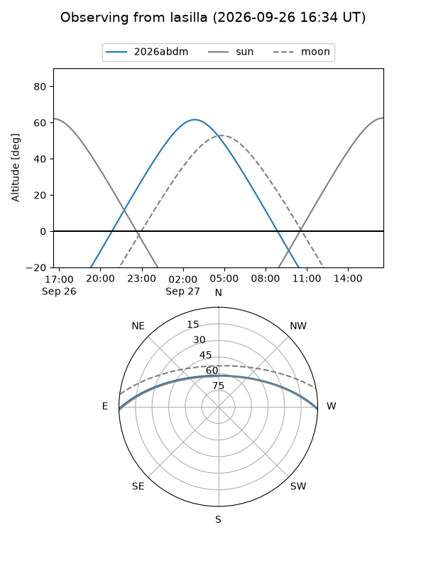
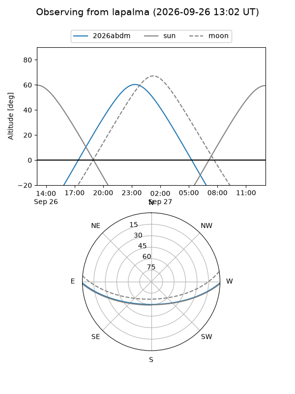
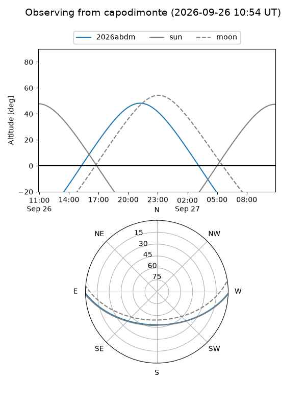
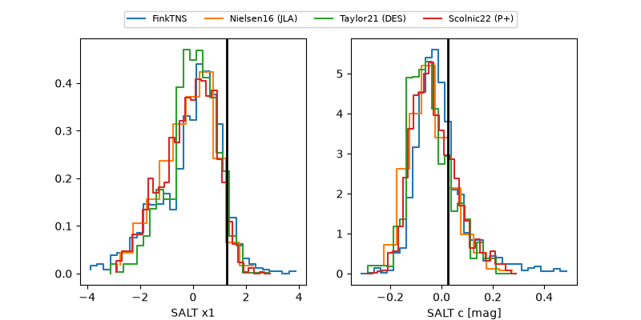

2026abdm
Target 2026abdm at 2026-09-26 18:08
Aliases and brokers:
FINK-ZTF: ztf.fink-portal.org/ZTF26abrxpch
Lasair-ZTF: lasair-ztf.lsst.ac.uk/objects/ZTF26abrxpch
ALeRCE-ZTF: alerce.online/object/ZTF26abrxpch
YSE-PZ: ziggy.ucolick.org/yse/transient_detail/2026abdm
TNS name: wis-tns.org/object/2026abdm
Direct TNS query: direct search
alt names
ZTF26abrxpch (ztf,fink_ztf)
2026abdm (tns,yse)
ATLAS26lgf (atlas)
PS26hpc (panstarrs)
Coordinates:
equatorial (ra, dec) = 337.7080,-1.03832
equatorial (HMS+DMS) = 22:30:49.93,-01:02:17.94
galactic (l, b) = (64.7120,-47.37714)
Flags:
TNS type: nan
peak dt: +15.0
Photometry:
last ztfg=19.83, ztfr=19.88
13 ztfg, 7 ztfr detections
Lightcurve
Visibility



Additional plots
